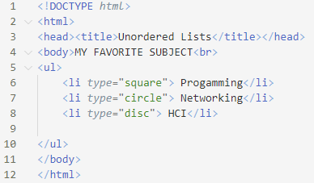

HTML LIST
HTML lists are an excellent method to arrange your website's content. You may use list components to organize your content.
You need two elements to create a bulleted (or unordered )list:
<ul> </ul> The unordered lists element enables you to create the list
<li> </li> You specify individual items on the list with the list item element
Sample code for Unordered List
Output:
Specifying the type of bullet for the entire list
To specify a square:<ul type=“square”>
To specify a circle:<ul type=“circle”>
To specify a disc:<ul type=“disc”>
Note: <li> tag also contains attribute type with values “square”,”circle”,”disc”
Example: Sample code for type of bullet
Output:
Example: Different Layout
Output:
Sample code for Ordered List
Ordered list is a list that arrange items in sequence by number or letter.
Ordered List have similar structure to unordered lists.
To create an ordered list, you need the following:
<ol></ol> the ordered list element,
<li></li> the list item element.
Output: